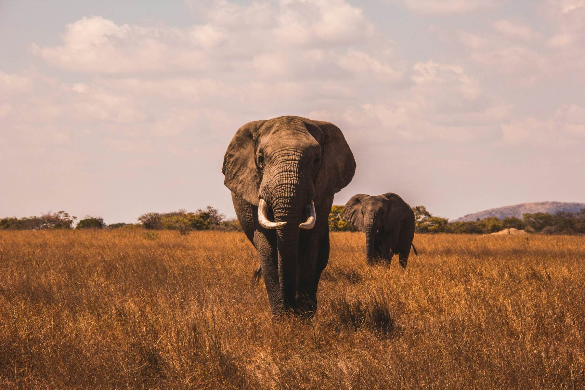

Kenya's parks, at the pace you choose.
From one night in Tsavo to a full circuit of the parks. We design the route, arrange the lodges and the vehicle, and send you one clear quotation.
Road, fly-in or several parks in one trip.
Pick the style that suits your time and your group. We can mix them.
Road safari
Drive between parks and stays with a vehicle for your group.
Fly-in safari
Fly to a park and spend more of your days watching wildlife.
Multi-park trips
Two or more parks on one trip, such as Amboseli and the Tsavo parks.
Masai Mara
Open plains and several game drives.
Amboseli
Kilimanjaro rising over the plains.
Tsavo East and West
Wide red-earth country and long views.
Samburu
Acacias and antelope at dusk with wildlife rarely seen on southern routes.
Lake Nakuru and Lake Naivasha
Birdlife, rhino and hippo, with walks along the shore.
What each place is like.
General guides to each park. Wildlife moves, so what you see varies by day and season.
Masai Mara
Open grassland with scattered acacia, known for big cats, elephants and large herds. From about July to October, wildebeest and zebra from the Serengeti usually cross into the Mara, and the Mara River crossings draw many visitors. The timing changes every year, so we cannot promise it for any date.
Game drives are the main activity. Early morning and late afternoon are usually the best hours.
Amboseli
Known for large elephant herds and for views of Mount Kilimanjaro across the border in Tanzania. Clouds often cover the mountain by mid-morning, so clear views are most likely at dawn and dusk.
The park is flat and open, and swamps fed by the mountain draw wildlife in the dry months.
Tsavo East and Tsavo West
Together the two Tsavo parks cover a very large area. Tsavo East is mostly open plains with red soil, and the elephants there often look red from dust-bathing. Tsavo West has more hills, lava rock and springs.
The distances are long, which is why we suggest more nights here, not a quick pass through.
Samburu
Dry country in the north, along the Ewaso Ng'iro river. Several animals seen here are rarely found in the southern parks, including Grevy's zebra, reticulated giraffe, gerenuk and Beisa oryx.
It is a long way from Nairobi, so it suits a trip with enough days to enjoy it.
Lake Nakuru and Lake Naivasha
Nakuru is known for birdlife and for rhino, in a park built around a soda lake. Naivasha is a freshwater lake with hippo and birds, and boat trips and walks along the shore are common here.
Both are in the Rift Valley and are within a day's drive of Nairobi, so they suit shorter trips.
The seasons, in plain words.
Kenya sits on the equator, so the year is divided by rain, not by cold and heat. Weather varies, so use this as a guide, not a promise.
The long dry season
Grass is shorter and animals gather near water, which makes wildlife easier to see. It is the busiest time and the Mara migration season. Book early.
The short rains
Short showers, green scenery and fewer visitors. Roads can be wet in places.
A warm, dry spell
Dry weather again and good wildlife viewing, before the heavier rains.
The long rains
The countryside is green and quiet, with lower rates at some lodges. Some roads are muddy and a few camps close. We will tell you what applies to your dates.
How a typical day goes.
Your days will vary with the park and the season, but most follow this rhythm.
Early morning drive
Animals are most active in the cooler hours, so many drives start around dawn.
Breakfast and rest
Return to your lodge or camp for breakfast, then rest during the heat of the day.
Afternoon drive
Head out again as the light softens and the animals become active.
Sundowner and dinner
End the day with a drink at sunset and dinner at your stay.
Fewer stops, longer looks.
We suggest fewer parks per trip, so days have long drives and no rushed transfers.
Tell us your plan
Your dates, your group and the parks you have in mind.
We design the route
We arrange the lodges and the vehicle for your dates.
You get one quotation
It shows what is included, what costs extra and the terms that apply.
You confirm
After you confirm, we book each service and stay in touch until you are home.
Questions visitors ask us.
Tell us if yours is not here.
How many days do I need?
Many first-time visitors find three to five days works well for one or two parks. More parks mean more driving, so we suggest fewer parks and longer looks.
Should I go by road or fly?
Flying saves drive time and gives you more hours in the park. Road trips let you see more of the country on the way and can suit a longer budget or schedule. We can mix both.
Will I share a vehicle with strangers?
No. We plan one vehicle per group, so the pace and the stops are yours.
What should I pack?
Light layers in neutral colours, a hat, sunscreen, insect repellent, binoculars, a camera, a warm layer for early mornings and your passport or ID. We send a full list after you confirm.
Are park fees included?
Park entry fees are charged per person and differ by park and season. Your quotation says whether they are included or extra.
Can I change the route?
Yes. Every route on the home page is a starting point. We change the parks, the length and the lodges to suit your group.
Ready for a safari?
Tell us your dates and the parks you have in mind. We will reply with ideas.